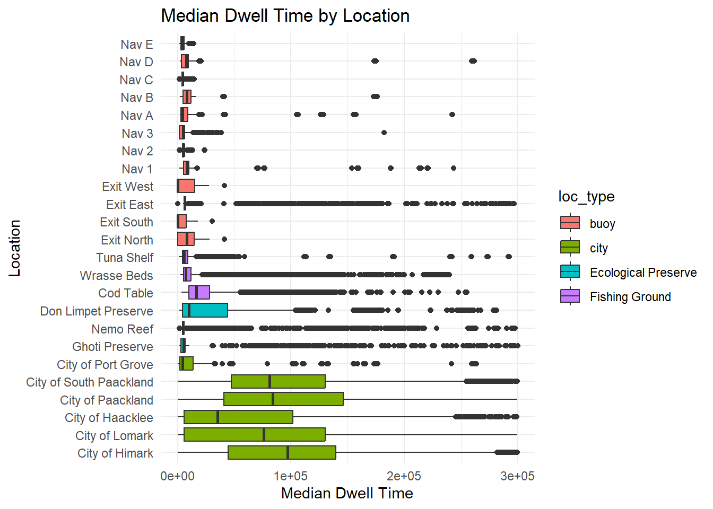
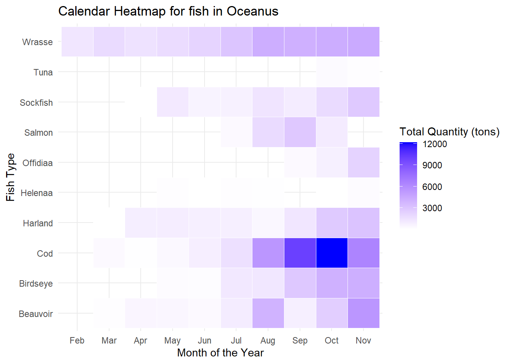
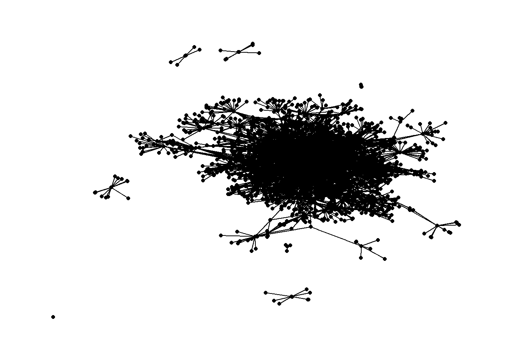
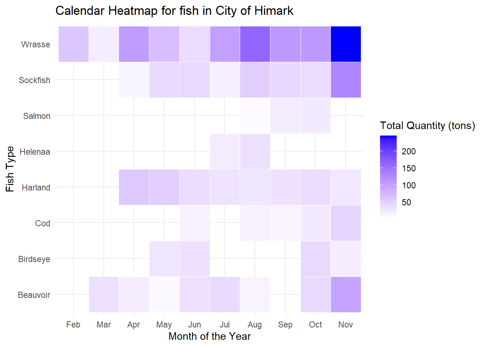
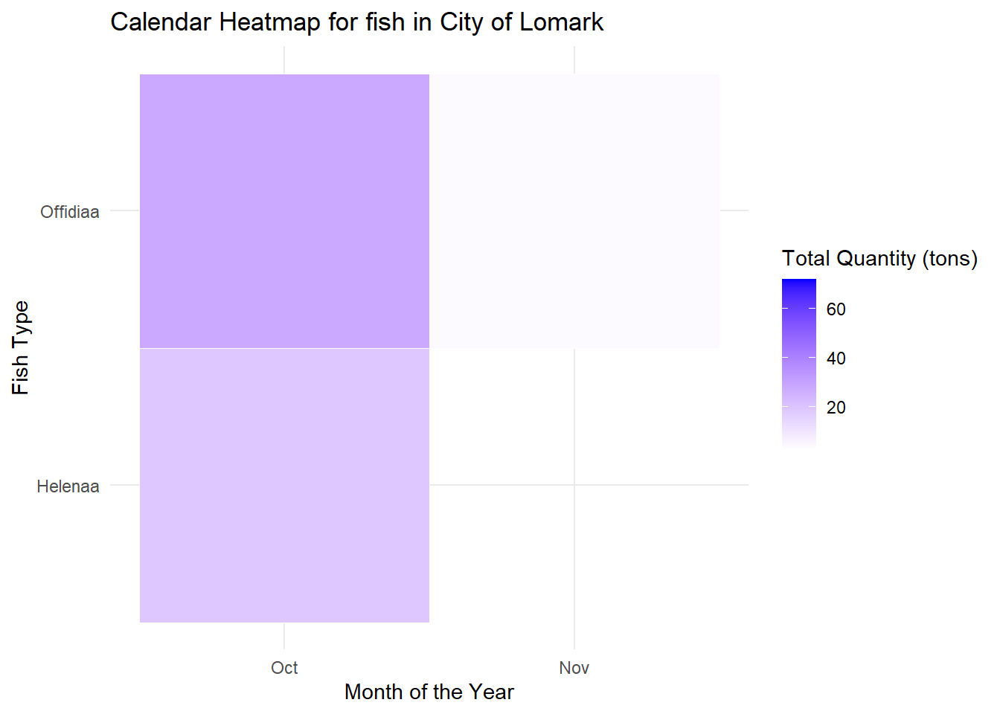
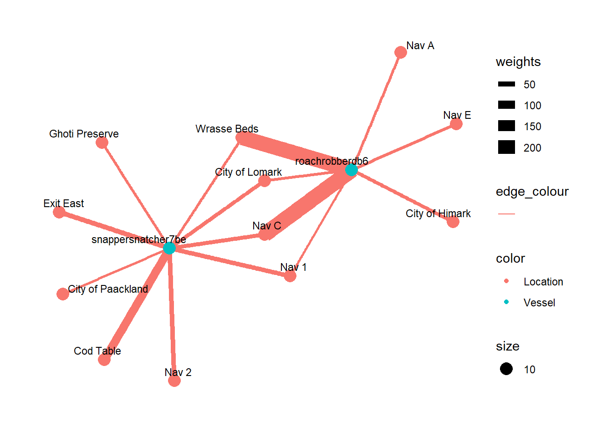
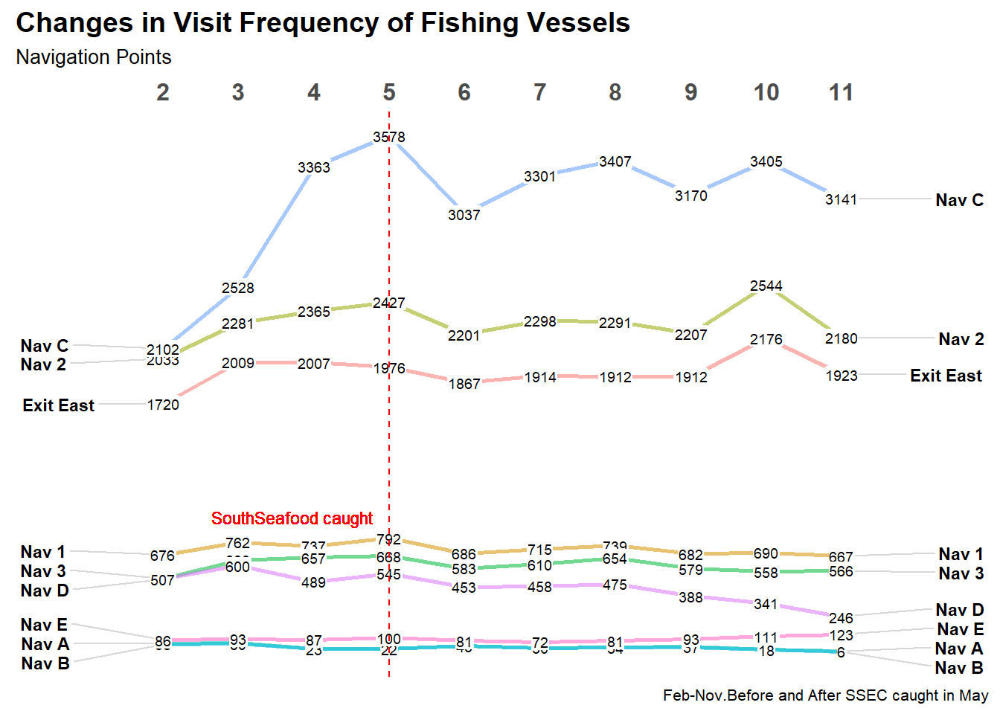

pacman::p_load(tidyverse, jsonlite, DT, lubridate,
igraph, tidygraph, ggraph,
visNetwork, sf,
patchwork, CGPfunctions,
ggHoriPlot)Take Home Exercise 3
VAST 2024 Mini Challenge 2
Mini-Challenge 2: Creating Signatures for Geo-Temporal Patterns
Mini-challenge 2 focuses on analyzing ship movements and shipping records to understand illegal fishing practices. FishEye analysts need help creating visualizations to show patterns of ship movements and identify suspicious behaviors. They also want to understand how the commercial fishing community changed after a company was caught fishing illegally.
The details of the mini challenge can be found here.
Tasks and Questions
FishEye analysts need your help to perform geographic and temporal analysis of the CatchNet data so they can prevent illegal fishing from happening again. Your task is to develop new visual analytics tools and workflows that can be used to discover and understand signatures of different types of behavior. Can you use your tool to visualize a signature of SouthSeafood Express Corp’s illegal behavior? FishEye needs your help to develop a workflow to find other instances of illegal behavior.
FishEye analysts have long wanted to better understand the flow of commercially caught fish through Oceanus’s many ports. But as they were loading data into CatchNet, they discovered they had purchased the wrong port records. They wanted to get the ship off-load records, but they instead got the port-exit records (essentially trucks/trains leaving the port area). Port exit records do not include which vessel that delivered the products. Given this limitation, develop a visualization system to associate vessels with their probable cargos. Which vessels deliver which products and when? What are the seasonal trends and anomalies in the port exit records?
Develop visualizations that illustrate the inappropriate behavior of SouthSeafood Express Corp vessels. How do their movement and catch contents compare to other fishing vessels? When and where did SouthSeafood Express Corp vessels perform their illegal fishing? How many different types of suspicious behaviors are observed? Use visual evidence to justify your conclusions.
To support further Fisheye investigations, develop visual analytics workflows that allow you to discover other vessels engaging in behaviors similar to SouthSeafood Express Corp’s illegal activities? Provide visual evidence of the similarities.
How did fishing activity change after SouthSeafood Express Corp was caught? What new behaviors in the Oceanus commercial fishing community are most suspicious and why?
1.0 Data Preparation
1.1 Loading R Packages
1.2 Loading the Data
Loading the .json data using jsonlite package.
mc2_data <- fromJSON("data/MC2/mc2.json")mc2 is a directed multigraph, consists of nodes dataframe and links dataframe.
1.2.1 Loading the Geographical Data
oceanus_geography = st_read("data/MC2/Oceanus Information/Oceanus Geography.geojson") %>%
st_transform(crs = 4326)Reading layer `Oceanus Geography' from data source
`C:\rydialiang\ISSS608\Take-home Exercise\Take-home_Ex03\data\MC2\Oceanus Information\Oceanus Geography.geojson'
using driver `GeoJSON'
Simple feature collection with 29 features and 7 fields
Geometry type: GEOMETRY
Dimension: XY
Bounding box: xmin: -167.0654 ymin: 38.07452 xmax: -163.2723 ymax: 40.67775
Geodetic CRS: WGS 84glimpse(oceanus_geography)Rows: 29
Columns: 8
$ Name <chr> "Suna Island", "Thalassa Retreat", "Makara Shoal"…
$ Description <chr> "Large island of Oceanus", "Smaller island of Oce…
$ X.note <chr> "Suna is 'sand' or 'gritty' in Japanese", "Thalas…
$ type <chr> "Entity.Location.Region", "Entity.Location.Region…
$ X.Kind <chr> "Island", "Island", "Island", "Island", "Fishing …
$ Activities <list> "Residential", "Residential", "Recreation", <"To…
$ fish_species_present <list> <>, <>, <>, <>, <"Cod/Gadus n.specificatae", "Bi…
$ geometry <GEOMETRY [°]> MULTIPOLYGON (((-166.0111 3..., MULTIPOL…write_rds(oceanus_geography,
"data/rds/oceanus_geography.rds")Importing Geographical Data in ESRI shapefile format
oceanus_locations <- st_read(dsn = "data/MC2/shp",
layer = "Oceanus Geography")Reading layer `Oceanus Geography' from data source
`C:\rydialiang\ISSS608\Take-home Exercise\Take-home_Ex03\data\MC2\shp'
using driver `ESRI Shapefile'
Simple feature collection with 27 features and 7 fields
Geometry type: POINT
Dimension: XY
Bounding box: xmin: -167.0654 ymin: 38.07452 xmax: -163.2723 ymax: 40.67775
Geodetic CRS: WGS 84glimpse(oceanus_locations)Rows: 27
Columns: 8
$ Name <chr> "Haacklee", "Port Grove", "Lomark", "Himark", "Paackland", …
$ Descriptio <chr> NA, NA, NA, NA, NA, "Adimistrative seat of Oceanus", NA, NA…
$ X.note <chr> NA, NA, NA, NA, NA, NA, NA, NA, NA, NA, NA, NA, NA, NA, NA,…
$ Activities <chr> "Tourism,Local shipping", "Tourism,Research", "Deep sea fis…
$ type <chr> "Entity.Location.City", "Entity.Location.City", "Entity.Loc…
$ X.Kind <chr> "city", "city", "city", "city", "city", "city", "city", "bu…
$ fish_speci <chr> NA, NA, NA, NA, NA, NA, NA, NA, NA, NA, NA, NA, NA, NA, NA,…
$ geometry <POINT [°]> POINT (-165.6908 39.03215), POINT (-165.8855 39.10005…ggplot(data = oceanus_locations) +
geom_sf()
write_rds(oceanus_locations,
"data/rds/oceanus_locations.rds")1.2.2 Wrangling of Geographical Data
In the code chunk below, st_coordinate() of sf package is used to extract coordinates from oceanus_locations sf data.frame.
coords <- st_coordinates(oceanus_locations)Next, code chunk below is used to drop the geometry column of oceanus_locations of sf data.frame by using st_drop_geometry() of sf package and save the output into a new data.frame called oceanus_locations_df.
oceanus_locations_df <- oceanus_locations %>%
st_drop_geometry()Then, the code chunk below is to append the x- and y-coodinate values from coords list into the XCOORD and YCOORD columns of oceanus_locations_df respectively.
oceanus_locations_df$XCOORD <- coords[, "X"]
oceanus_locations_df$YCOORD <- coords[, "Y"]Lastly, the code chunk below is used to tidy OceanusLocations_df by selecting the necessary columns only and at the same time, rename X.Kind to Loc_Type.
oceanus_locations_df <- oceanus_locations_df %>%
select(Name, X.Kind, XCOORD, YCOORD) %>%
rename(Loc_Type = X.Kind)1.3 Wrangling and tidying edges
1.3.1 Extracting edges
First, we extract only distinct edges from the tibble links data.frame of mc2_data and save it as a tibble data.frame called mc2_edges.
mc2_edges <- mc2_data$links %>%
distinct()Next, glimpse() of dplyr will be used to reveal the structure of mc2_edges tibble data.table.
glimpse(mc2_edges)Rows: 271,643
Columns: 17
$ type <chr> "Event.TransportEvent.TransponderPing", "Event.Tra…
$ time <chr> "2035-09-16T04:06:48.185987", "2035-09-20T05:21:33…
$ dwell <dbl> 115074.79, 412706.32, 286092.88, 327623.95, 243225…
$ `_last_edited_by` <chr> "Olokun Daramola", "Melinda Manning", "Olokun Dara…
$ `_date_added` <chr> "2035-09-16T00:59:46.300100", "2035-09-22T02:37:37…
$ `_last_edited_date` <chr> "2035-09-16T00:59:46.300100", "2035-09-22T02:37:37…
$ `_raw_source` <chr> "Oceanus Vessel Locator System", "Oceanus Vessel L…
$ `_algorithm` <chr> "OVLS-Catch&Hook", "OVLS-Catch&Hook", "OVLS-Catch&…
$ source <chr> "City of Haacklee", "City of Haacklee", "City of H…
$ target <chr> "perchplundererbc0", "perchplundererbc0", "perchpl…
$ key <int> 0, 1, 2, 3, 4, 5, 6, 7, 8, 0, 1, 2, 3, 4, 5, 6, 7,…
$ date <chr> NA, NA, NA, NA, NA, NA, NA, NA, NA, NA, NA, NA, NA…
$ data_author <chr> NA, NA, NA, NA, NA, NA, NA, NA, NA, NA, NA, NA, NA…
$ aphorism <chr> NA, NA, NA, NA, NA, NA, NA, NA, NA, NA, NA, NA, NA…
$ holiday_greeting <chr> NA, NA, NA, NA, NA, NA, NA, NA, NA, NA, NA, NA, NA…
$ wisdom <chr> NA, NA, NA, NA, NA, NA, NA, NA, NA, NA, NA, NA, NA…
$ `saying of the sea` <chr> NA, NA, NA, NA, NA, NA, NA, NA, NA, NA, NA, NA, NA…From the table above, we can identify some issues with the data:
The columns with date data type are all in character format.
Some columns have names that starts with “_”. These need to be rename to avoid coding issues.
1.3.2 Correcting the date data type with lubridate()
mc2_edges$time <- as_datetime(mc2_edges$time)
mc2_edges$`_last_edited_date` <- as_datetime(mc2_edges$`_last_edited_date`)
mc2_edges$`_date_added` <- as_datetime(mc2_edges$`_date_added`)
mc2_edges$date <- as_datetime(mc2_edges$date)Next, glimpse() will be used to confirm if the process have been performed correctly.
glimpse(mc2_edges)Rows: 271,643
Columns: 17
$ type <chr> "Event.TransportEvent.TransponderPing", "Event.Tra…
$ time <dttm> 2035-09-16 04:06:48, 2035-09-20 05:21:33, 2035-09…
$ dwell <dbl> 115074.79, 412706.32, 286092.88, 327623.95, 243225…
$ `_last_edited_by` <chr> "Olokun Daramola", "Melinda Manning", "Olokun Dara…
$ `_date_added` <dttm> 2035-09-16 00:59:46, 2035-09-22 02:37:37, 2035-09…
$ `_last_edited_date` <dttm> 2035-09-16 00:59:46, 2035-09-22 02:37:37, 2035-10…
$ `_raw_source` <chr> "Oceanus Vessel Locator System", "Oceanus Vessel L…
$ `_algorithm` <chr> "OVLS-Catch&Hook", "OVLS-Catch&Hook", "OVLS-Catch&…
$ source <chr> "City of Haacklee", "City of Haacklee", "City of H…
$ target <chr> "perchplundererbc0", "perchplundererbc0", "perchpl…
$ key <int> 0, 1, 2, 3, 4, 5, 6, 7, 8, 0, 1, 2, 3, 4, 5, 6, 7,…
$ date <dttm> NA, NA, NA, NA, NA, NA, NA, NA, NA, NA, NA, NA, N…
$ data_author <chr> NA, NA, NA, NA, NA, NA, NA, NA, NA, NA, NA, NA, NA…
$ aphorism <chr> NA, NA, NA, NA, NA, NA, NA, NA, NA, NA, NA, NA, NA…
$ holiday_greeting <chr> NA, NA, NA, NA, NA, NA, NA, NA, NA, NA, NA, NA, NA…
$ wisdom <chr> NA, NA, NA, NA, NA, NA, NA, NA, NA, NA, NA, NA, NA…
$ `saying of the sea` <chr> NA, NA, NA, NA, NA, NA, NA, NA, NA, NA, NA, NA, NA…1.3.3 Changing field name
In the code chunk below, rename() of dplyr package is used to change the following fields.
mc2_edges <- mc2_edges %>%
rename("last_edited_by" = "_last_edited_by",
"date_added" = "_date_added",
"last_edited_date" = "_last_edited_date",
"raw_source" = "_raw_source",
"algorithm" = "_algorithm") 1.3.4 Splitting words in type column
The code chunk below combined the following steps:
Splitting the words by “.” - after observing that the format for type is as such: “Event.TransportEvent.TransponderPing”
The
max(lengths(word_list))will be used to find the maximum number of elements in any split.Apply function(x) to pad shorter splits with NA values to make them all the same length.
Create word_df and changing column names to event1 etc.
Convert word_df from matrix into tibble data.frame, and checks its class.
Append word_df to mc2_edges tibble data.frame.
Saving mc2_edges into R rds format as a physical file, so that there is no need to repeat the following code chunk to access a tidy mc2_edges tibble data frame.
word_list <- strsplit(mc2_edges$type, "\\.")
max_elements <- max(lengths(word_list))
word_list_padded <- lapply(word_list,
function(x) c(x, rep(NA, max_elements - length(x))))
word_df <- do.call(rbind, word_list_padded)
colnames(word_df) <- paste0("event", 1:max_elements)
word_df <- as_tibble(word_df) %>%
select(event2, event3)
class(word_df)[1] "tbl_df" "tbl" "data.frame"mc2_edges <- mc2_edges %>%
cbind(word_df)
# prior to running this code, create an rds folder in data folder to ensure files are saved in the correct directory
write_rds(mc2_edges, "data/rds/mc2_edges.rds")1.4 Wrangling and tidying nodes
1.4.1 Extracting nodes
The code chunk below will be used to extract the nodes data.frame of mc2_data and parses it as a tibble data.frame called mc2_nodes.
mc2_nodes <- as_tibble(mc2_data$nodes) %>%
distinct()Next, take a glimpse() to understand the data structure.
glimpse(mc2_nodes)Rows: 5,637
Columns: 20
$ type <chr> "Entity.Commodity.Fish", "Entity.Commodity.Fish",…
$ `_last_edited_by` <chr> "Clepper Jessen", "Clepper Jessen", "Haenyeo Hyun…
$ `_date_added` <chr> "2033-09-04T00:00:00", "2034-01-21T00:00:00", "20…
$ `_last_edited_date` <chr> "2035-01-25T00:00:00", "2035-01-04T00:00:00", "20…
$ `_raw_source` <chr> "", "", "", "", "", "", "", "", "", "", "Oceanus:…
$ `_algorithm` <chr> "", "", "", "", "", "", "", "", "", "", "", "", "…
$ name <chr> "Cod/Gadus n.specificatae", "Birdseye/Pisces frig…
$ id <chr> "gadusnspecificatae4ba", "piscesfrigus900", "pisc…
$ Name <chr> NA, NA, NA, NA, NA, NA, NA, NA, NA, NA, "Haacklee…
$ Description <chr> NA, NA, NA, NA, NA, NA, NA, NA, NA, NA, NA, NA, N…
$ Activities <list> <NULL>, <NULL>, <NULL>, <NULL>, <NULL>, <NULL>, …
$ kind <chr> NA, NA, NA, NA, NA, NA, NA, NA, NA, NA, "city", "…
$ qty_tons <dbl> NA, NA, NA, NA, NA, NA, NA, NA, NA, NA, NA, NA, N…
$ date <chr> NA, NA, NA, NA, NA, NA, NA, NA, NA, NA, NA, NA, N…
$ flag_country <chr> NA, NA, NA, NA, NA, NA, NA, NA, NA, NA, NA, NA, N…
$ company <chr> NA, NA, NA, NA, NA, NA, NA, NA, NA, NA, NA, NA, N…
$ tonnage <int> NA, NA, NA, NA, NA, NA, NA, NA, NA, NA, NA, NA, N…
$ length_overall <int> NA, NA, NA, NA, NA, NA, NA, NA, NA, NA, NA, NA, N…
$ style <chr> NA, NA, NA, NA, NA, NA, NA, NA, NA, NA, NA, NA, N…
$ fish_species_present <list> <NULL>, <NULL>, <NULL>, <NULL>, <NULL>, <NULL>, …From the table above, beside the date data type, inappropriate field name, and treatment for type column issues we discussed earlier, two additional data issues can be observed. They are:
The values in Activities and fish_species_present fields are in list data type, which will affect the ability to process and to analyse the data.
Some values in the Activities field are not ready to be analyse without further tidying (i.e. removing c(““)).
We will first repeat the steps similar steps to wrangling the mc2_edges, before proceeding to tackle the issues for Activities and fish_species_present field.
1.4.2 Correcting the date data type with lubridate()
Correct the date data type and take a glimpse() to confirm changes.
mc2_nodes$`_last_edited_date` <- as_datetime(mc2_nodes$`_last_edited_date`)
mc2_nodes$`_date_added` <- as_datetime(mc2_nodes$`_date_added`)
mc2_nodes$date <- as_datetime(mc2_nodes$date)
glimpse(mc2_nodes)Rows: 5,637
Columns: 20
$ type <chr> "Entity.Commodity.Fish", "Entity.Commodity.Fish",…
$ `_last_edited_by` <chr> "Clepper Jessen", "Clepper Jessen", "Haenyeo Hyun…
$ `_date_added` <dttm> 2033-09-04, 2034-01-21, 2033-06-22, 2033-11-24, …
$ `_last_edited_date` <dttm> 2035-01-25, 2035-01-04, 2035-01-14, 2035-01-14, …
$ `_raw_source` <chr> "", "", "", "", "", "", "", "", "", "", "Oceanus:…
$ `_algorithm` <chr> "", "", "", "", "", "", "", "", "", "", "", "", "…
$ name <chr> "Cod/Gadus n.specificatae", "Birdseye/Pisces frig…
$ id <chr> "gadusnspecificatae4ba", "piscesfrigus900", "pisc…
$ Name <chr> NA, NA, NA, NA, NA, NA, NA, NA, NA, NA, "Haacklee…
$ Description <chr> NA, NA, NA, NA, NA, NA, NA, NA, NA, NA, NA, NA, N…
$ Activities <list> <NULL>, <NULL>, <NULL>, <NULL>, <NULL>, <NULL>, …
$ kind <chr> NA, NA, NA, NA, NA, NA, NA, NA, NA, NA, "city", "…
$ qty_tons <dbl> NA, NA, NA, NA, NA, NA, NA, NA, NA, NA, NA, NA, N…
$ date <dttm> NA, NA, NA, NA, NA, NA, NA, NA, NA, NA, NA, NA, …
$ flag_country <chr> NA, NA, NA, NA, NA, NA, NA, NA, NA, NA, NA, NA, N…
$ company <chr> NA, NA, NA, NA, NA, NA, NA, NA, NA, NA, NA, NA, N…
$ tonnage <int> NA, NA, NA, NA, NA, NA, NA, NA, NA, NA, NA, NA, N…
$ length_overall <int> NA, NA, NA, NA, NA, NA, NA, NA, NA, NA, NA, NA, N…
$ style <chr> NA, NA, NA, NA, NA, NA, NA, NA, NA, NA, NA, NA, N…
$ fish_species_present <list> <NULL>, <NULL>, <NULL>, <NULL>, <NULL>, <NULL>, …1.4.3 Changing field name
In the code chunk below, rename() of dplyr package is used to change the following fields.
mc2_nodes <- mc2_nodes %>%
rename("last_edited_by" = "_last_edited_by",
"date_added" = "_date_added",
"last_edited_date" = "_last_edited_date",
"raw_source" = "_raw_source",
"algorithm" = "_algorithm") 1.4.4 Splitting words in type column
Details on the code chunk can be found in section 1.3.4. At this point, we will not be saving the mc2_nodes as R rds format yet, as there are more works to be done to clean up the dataframe.
word_list <- strsplit(mc2_nodes$type, "\\.")
max_elements <- max(lengths(word_list))
word_list_padded <- lapply(word_list,
function(x) c(x, rep(NA, max_elements - length(x))))
word_df <- do.call(rbind, word_list_padded)
colnames(word_df) <- paste0("entity", 1:max_elements)
word_df <- as_tibble(word_df) %>%
select(entity2, entity3)
class(word_df)[1] "tbl_df" "tbl" "data.frame"mc2_nodes <- mc2_nodes %>%
cbind(word_df)1.4.5 Tidying text field
Using mutate() of dplyr and gsub() of Base R to tidy up the values in the cell. Essentially, the unwanted characters like c, (, ), and \ are removed by substituting with empty value "" for both Activities and fish_species_present columns. What is left in the columns will be characters separated by ,.
mc2_nodes <- mc2_nodes %>%
mutate(Activities = gsub("c[(]", "", Activities)) %>%
mutate(Activities = gsub("\"", "", Activities)) %>%
mutate(Activities = gsub("[)]", "", Activities)) mc2_nodes <- mc2_nodes %>%
mutate(fish_species_present = gsub("c[(]", "", fish_species_present)) %>%
mutate(fish_species_present = gsub("\"", "", fish_species_present)) %>%
mutate(fish_species_present = gsub("[)]", "", fish_species_present)) Lastly, we will save the tidied mc2_nodes
# prior to running this code, create an rds folder in data folder to ensure files are saved in the correct directory
write_rds(mc2_nodes, "data/rds/mc2_nodes.rds")1.5 Extracting the required columns for each graph
In this section, we will extract the required column for the following graphs:
Vessel Movements
Harbor Reports
Harbor Import Records
1.5.1 Vessel Movements
Vessel Movements: Oceanus is outfitted with a transponder/ping system named the Oceanus Vessel Locator System (OVLS). Vessels are outfitted with a transponder and periodic ‘pings’ from base-stations results in a report of vessel locations at any time. The raw ping granularity is at the minute-level but post-processing has converted it into visit/dwell times. OVLS is generally reliable, though vessel records may be missing for a variety of reasons.
Node/Edge types and properties present
- Entity.Vessel: Description of the vessel
- Entity.Location: Description of a geographic location
- Event.TransponderPing: Links a vessel to a location
First, we will extract the relevant nodes, namely the vessels and locations from mc2_nodes.
vessel_mvmt_nodes <- mc2_nodes %>%
filter(entity2 %in% c("Vessel","Location")) Next, we will extract the vessel movement edges from mc2_edges, by filtering the “TransponderPing” from event3 column.
vessel_mvmt_edges <- mc2_edges %>%
filter(event3 %in% c("TransponderPing"))vessel_movement_data <- vessel_mvmt_edges %>%
filter(event3 %in% c("TransponderPing")) %>%
select(time, dwell, source, target) %>%
mutate(source = gsub("^City of", "", source)) %>%
mutate(source = gsub("^\\s+", "", source)) %>%
left_join(oceanus_locations_df,
by = c("source" = "Name"))1.5.2 Harbor Reports
Harbor Reports: Harbor masters regularly report the vessels found in their purview anytime during the day. This data is derived from a different system than OVLS (see “Vessel Movements”), though the data overlaps. Harbor Reports are provided on a different schedule from different harbors. Since no harbor reports every day, this data has lower temporal granularity than vessel movement data. Additionally, the Harbor Master is also responsible for proximate navigational beacon(s), so this data has lower spatial granularity as well. However, the list of vessels observed is considered canonical.
Node/edge types present:
Entity.Vessel
Entity.location
Event.HarborReport
Since the node type are the same as the vessel movements, we will make a copy of the node from vessel movement nodes.
harbor_report_nodes <- vessel_mvmt_nodesNext, we will extract the harbor report edges from mc2_edges, by filtering the “HarborReport” from event3 column.
harbor_report_edges <- mc2_edges %>%
filter(event2 %in% c("HarborReport"))1.5.3 Harbor Import Records
Harbor Import Records: Vessels deliver cargo to the ports, and that cargo is brought into Oceanus. These records reflect the goods that *leave* the harbor to go to businesses in Oceanus or to be exported. It was filtered pre-ingest to focus on the delivery of raw fish. Because it is raw, fish leave the port quickly (generally one day after delivery). Due to clerical error, the records purchased by FishEye do not include the vessel that delivered the cargo.
Node/Edge types present:
Entity.location
Entity.Commodity.Fish
Entity.Document.DeliveryReport
Event.Transaction
First, we will extract the relevant nodes, namely the location, commodity.fish and document.delivery report from mc2_nodes.
harbor_import_records_nodes <- mc2_nodes %>%
filter(entity2 %in% c("Location","Commodity","Document"))Next, we will extract harbor import records edges, by filtering the event2 with value of “Transaction”.
harbor_import_records_edges <- mc2_edges %>%
filter(event2 == "Transaction")Before we move on to exploring the data, we will save the 3 sources edges and nodes tibble data frame as R rds format in the data/rds folder:
write_rds(vessel_mvmt_nodes, "data/rds/vessel_mvmt_nodes.rds")
write_rds(vessel_mvmt_edges, "data/rds/vessel_mvmt_edges.rds")
write_rds(vessel_movement_data, "data/rds/vessel_movement_data.rds")
write_rds(harbor_report_nodes, "data/rds/harbor_report_nodes.rds")
write_rds(harbor_report_edges, "data/rds/harbor_report_edges.rds")
write_rds(harbor_import_records_nodes, "data/rds/harbor_import_records_nodes.rds")
write_rds(harbor_import_records_edges, "data/rds/harbor_import_records_edges.rds")unique(mc2_edges$type)[1] "Event.TransportEvent.TransponderPing"
[2] "Event.Transaction"
[3] "Event.HarborReport" 1.6 Exploratory Data Analysis
1.6.1 Understanding the nodes and edges data
In this section, we will gain more insights from the existing data. The table below summarises the type of data we can glean from the nodes and edges:
| mc2_nodes Type | Entity | Details |
|---|---|---|
| Commodity | Fish | 10 x Fish Species
|
| Location |
|
6 x City
12 x Point
6 x Region
|
| Document | Delivery Report | 5,307 unique cargoes, with qty_ton and date (of delivery) |
| Vessels |
|
296 x Vessels
|


| mc2_edges type | Count (n) |
|---|---|
| Transponder Ping | 258,542 x Pings |
| Transaction | 10,614 x Transactions (matching 5,307 unique cargoes to fish species and city) |
| Harbor Report | 2,487 x Sightings |
1.6.2 Understanding the Fish Species in each Region
region_fish_species <- mc2_nodes %>%
filter(entity3 == "Region") %>%
select(Name, fish_species_present, Activities, kind)word_list <- strsplit(region_fish_species$fish_species_present, "\\,")
max_elements <- max(lengths(word_list))
word_list_padded <- lapply(word_list,
function(x) c(x, rep(NA, max_elements - length(x))))
word_df <- do.call(rbind, word_list_padded)
colnames(word_df) <- paste0("species", 1:max_elements)
word_df <- as_tibble(word_df) %>%
mutate(species1 = str_replace(species1, "/.*", "")) %>%
mutate(species2 = str_replace(species2, "/.*", "")) %>%
mutate(species3 = str_replace(species3, "/.*", "")) %>%
mutate(species4 = str_replace(species4, "/.*", "")) %>%
mutate(species5 = str_replace(species5 , "/.*", "")) %>%
mutate_at(vars(species1:species5), trimws)
region_fish_species <- region_fish_species %>%
cbind(word_df)
# Convert data to long format
region_fish_species_long <- pivot_longer(region_fish_species, cols = starts_with("species"), names_to = "Species", values_to = "Presence")
# Filter out empty values and trim away leading and trailing whitespace
region_fish_species_long <- region_fish_species_long[region_fish_species_long$Presence != "", ] %>%
na.omit() %>%
mutate_at(vars(Presence), trimws)# Order them based on 3 Preserves and 3 Fishing Ground
desired_order <- c("Ghoti Preserve", "Nemo Reef", "Don Limpet Preserve","Cod Table", "Wrasse Beds","Tuna Shelf")
region_fish_species_long$Name <- factor(region_fish_species_long$Name, levels = desired_order)
ggplot(region_fish_species_long, aes(x = Name,
y = Presence,
colour = Presence)) +
geom_point() +
labs(title = "Species Presence in each Region",
x = "Region",
y = "Species") +
theme_minimal() +
theme(axis.text.x = element_text(angle = 45, hjust = 1),
legend.position = "none")
Insights from this visualisation
We can derive that Sockfish, Offidiaa, and Helenaa species can only be found in the preserves but not in the fishing grounds. Therefore, any cargoes that contains these fish species would have fished illegally. Below shows the visualisation of the species and qty_ton that flows through each city by months.
2.0 Task 1: Flow of Commercially Caught Fish
In this section, we focus on a few key areas to understand how the commercially caught fish flows from the vessels through the various ports:
- Associating the vessels with their probable cargoes
- Which vessels deliver which products and when?
- Examine the seasonal trends and anomalies in the port exit records
2.1 Associating the vessels with their probable cargoes
To find out which commodity goes to which ports, we first create a cargo list that links the cargo to the cities and commodities. At the same time, we also clean up the name of the fish, leaving only its common name in the “name” column, by removing all the characters after the “/”.
cargo_port_list <- harbor_import_records_edges %>%
select(source,target) %>%
filter(target %in% c("City of Haacklee",
"City of Lomark",
"City of Himark",
"City of Paackland",
"City of South Paackland",
"City of Port Grove"))
cargo_commodity_list <- harbor_import_records_edges %>%
select(source,target) %>%
filter(!target %in% c("City of Haacklee",
"City of Lomark",
"City of Himark",
"City of Paackland",
"City of South Paackland",
"City of Port Grove")) %>%
rename(commodity = target)
cargo_list <- cargo_port_list %>%
left_join(cargo_commodity_list) %>%
left_join(harbor_import_records_edges) %>%
select(source, target, commodity, date) %>%
rename(cargo = source, city = target)
cargo_list<- harbor_import_records_nodes %>%
filter(entity3 =="Fish") %>%
rename(commodity = id) %>%
select(name, commodity) %>%
left_join(cargo_list) %>%
mutate(name = str_replace(name, "/.*", ""))
cargo_list<- harbor_import_records_nodes %>%
select(id,qty_tons) %>%
rename(cargo = id) %>%
left_join(cargo_list,
unmatched = "drop") %>%
filter(if_all(c(qty_tons), ~ !is.na(.)))Matching the vessel with the cargo list
We will use the vessel_mvmt_nodes that contains information on the movement of fishing vessels and cargoes, and define the vessels location, start time and end time of the vessels in the particular location using transponder ping.
fishing_vessel_list <- vessel_mvmt_nodes %>%
filter(entity3 %in% c("FishingVessel")) %>%
select(id)vessel_list <- vessel_mvmt_nodes %>%
filter(entity3 %in% c("FishingVessel", "CargoVessel")) %>%
select(id)
vessel_list <- as.list(vessel_list)
vessel_location <- mc2_edges %>%
filter(event3 == "TransponderPing") %>%
filter(target %in% unlist(vessel_list)) %>%
select(source, target, time, dwell) %>%
arrange(target,time) %>%
mutate(next_time = ifelse(lead(target) == target, lead(time), NA)) %>%
mutate(next_time = as_datetime(next_time)) %>%
mutate(end_time = time + dwell)
vessel_location_city <- vessel_location %>%
filter(source %in% c("City of Haacklee",
"City of Lomark",
"City of Himark",
"City of Paackland",
"City of South Paackland",
"City of Port Grove"))Vessel Location based on harbor report
The next step we do is to extract the date, location and vessel from the harbor report. Since this is describe as canonical, it should be considered for matching first before using the vessel location data from transponder ping. Columns are renamed to match the information in the cargo_list.
vessel_mvmt_hr <- harbor_report_edges %>%
select(source, target, date) %>%
rename(vessel = source, city = target, vessel_delivery_date = date)Merging cargo_list and vessel_mvmt_hr
Adding one column on vessel delivery date, which is 1 day before the date stated in the harbor import record.
cargo_list <- cargo_list %>%
mutate(vessel_delivery_date = date + days(-1))Saving cargo_list:
write_rds(cargo_list, "data/rds/cargo_list.rds")vessel_location_match_hr <- cargo_list%>%
left_join(vessel_mvmt_hr ) %>%
filter(if_all(c(qty_tons,vessel), ~ !is.na(.))) %>%
distinct()write_rds(vessel_location_match_hr, "data/rds/vessel_location_match_hr.rds")hr_match <- mc2_nodes %>%
select(id,Name,flag_country, company, tonnage,entity3) %>%
rename(vessel = id) %>%
left_join(vessel_location_match_hr) %>%
filter(if_all(c(qty_tons, tonnage), ~ !is.na(.))) %>%
distinct() %>%
filter()Merging cargo_list and vessel_location_city
vessel_location_city <- vessel_location_city %>%
mutate(date = substr(`time`,1,10)) %>%
mutate(vessel_delivery_date = ymd(date)) %>%
filter(dwell > 0)vessel_location_match <- vessel_location_city %>%
select(source,target,vessel_delivery_date) %>%
rename(city = source, vessel_hr = target) %>%
left_join(cargo_list,
unmatched = "drop") %>%
filter(if_all(c(qty_tons), ~ !is.na(.))) %>%
distinct()Vessel Match Graph
id1 <- vessel_location_match_hr %>%
select(vessel) %>%
rename(id = vessel)
id2 <- vessel_location_match_hr %>%
select(cargo) %>%
rename(id = cargo)
cargo_vessel_nodes <- rbind(id1,id2) %>%
distinct()
cargo_vessel_edges <- vessel_location_match_hr %>%
select(vessel,cargo, name, city) %>%
distinct() %>%
group_by(vessel, cargo) %>%
rename(source = vessel, target = cargo)%>%
filter(source!=target) %>%
ungroup()
cargo_vessel_graph <- tbl_graph(nodes = cargo_vessel_nodes,
edges = cargo_vessel_edges,
directed = FALSE)cargo_vessel_graph %>%
ggraph(layout = 'fr') +
geom_edge_link() +
geom_node_point() +
theme_graph()Finding anomalies in vessel movement by comparing end time (calculated by dwell) with next time (the next time the vessel is detected at the next location).
ab_vessel_mvmt <- vessel_location %>%
mutate(time = ymd_hms(time)) %>%
mutate(next_time = ymd_hms(next_time)) %>%
mutate(end_time = ymd_hms(end_time)) %>%
filter(end_time != next_time)
ab_vessel_mvmt_agg <- ab_vessel_mvmt %>%
distinct() %>%
group_by(source) %>%
summarise(weights = n()) %>%
arrange(desc(weights))
ab_vessel_mvmt_agg# A tibble: 22 × 2
source weights
<chr> <int>
1 City of Paackland 2893
2 City of South Paackland 2553
3 City of Lomark 2482
4 City of Himark 1721
5 City of Haacklee 1509
6 Cod Table 1018
7 Nav C 710
8 Exit East 646
9 Wrasse Beds 592
10 Tuna Shelf 517
# ℹ 12 more rowsOverview of Harbor Report
distinct_harbor_report <- harbor_report_edges %>%
select(source,target,date) %>%
filter(source %in% unlist(fishing_vessel_list)) %>%
distinct() %>%
arrange(source, date) %>%
mutate(target = fct_infreq(target))ggplot(distinct_harbor_report) +
geom_bar(aes(x = target))
Overview of Vessels Location by Transponder Ping
transponder_location <- mc2_edges %>%
filter(event3 == "TransponderPing") %>%
filter(target %in% unlist(fishing_vessel_list)) %>%
filter(source %in% c("City of Haacklee",
"City of Lomark",
"City of Himark",
"City of Paackland",
"City of South Paackland",
"City of Port Grove")) %>%
select(source, target, time) %>%
mutate(source = fct_infreq(source))
ggplot(transponder_location) +
geom_bar(aes(x = source))
A quick comparison between the two bar chart, we can conclude that port activities for fishing vessels are highest at City of Paackland and least at City of Himark. Also, there is no fishing vessels that visits City of Port Grove.
2.3 Examine the seasonal trends and anomalies in the port exit records
We examine the cargo_list and realised that there are some records that shows negative tonnage for their cargoes. This is abnormal as all cargoes should have positive qty_tons value.
negative_ton_cargo_by_city <- cargo_list %>%
filter(qty_tons <= 0) %>%
arrange(qty_tons) %>%
group_by(city) %>%
summarise(total_qty_ton_neg = sum(qty_tons)) %>%
arrange(total_qty_ton_neg)
positive_ton_cargo_by_city <- cargo_list %>%
filter(qty_tons > 0) %>%
arrange(qty_tons) %>%
group_by(city) %>%
summarise(total_qty_ton_pos = sum(qty_tons)) %>%
arrange(desc(total_qty_ton_pos))
negative_ton_cargo_by_city # A tibble: 5 × 2
city total_qty_ton_neg
<chr> <dbl>
1 City of Paackland -224.
2 City of Himark -173.
3 City of South Paackland -139.
4 City of Lomark -115.
5 City of Haacklee -77.8positive_ton_cargo_by_city# A tibble: 5 × 2
city total_qty_ton_pos
<chr> <dbl>
1 City of Paackland 34653.
2 City of Himark 32839.
3 City of Lomark 23721.
4 City of South Paackland 20790.
5 City of Haacklee 14988.positive_ton_cargo_by_city$city <- factor(positive_ton_cargo_by_city$city,
levels = rev(positive_ton_cargo_by_city$city[order(positive_ton_cargo_by_city$total_qty_ton_pos)]))
ggplot(positive_ton_cargo_by_city, aes(x = city)) +
geom_bar(aes(y = total_qty_ton_pos),
stat = "identity",
position = "dodge", fill = "blue", alpha = 0.6) + # Positive quantities
labs(title = "Quantities by City",
x = "",
y = "Total Quantity (tons)") +
theme_minimal()
There seems to be suspicious activities going on at each cities when we look at the negative values in qty_ton.
negative_ton_cargo_by_city# A tibble: 5 × 2
city total_qty_ton_neg
<chr> <dbl>
1 City of Paackland -224.
2 City of Himark -173.
3 City of South Paackland -139.
4 City of Lomark -115.
5 City of Haacklee -77.8Next, we will remove the negative quantity and then find the aggregated value by the type of fish, the city, and the date of transaction.
fish_by_port_agg <- cargo_list %>%
distinct() %>%
filter(qty_tons > 0) %>%
group_by(name, city, date) %>%
summarise(total_qty_ton = sum(qty_tons)) %>%
ungroup() %>%
mutate(month = month(date,
label = TRUE,
abbr = TRUE))Secondly, when we observe the heatmap, we also realised that the data only covers the month from Feb to Nov in year 2035.
# Create an overall Oceanus heat map for all types of fish
fish_agg <- fish_by_port_agg %>%
distinct() %>%
group_by(name,month) %>%
summarise(total_qty_ton = sum(total_qty_ton))
ggplot(fish_agg, aes(x = month, y = name, fill = total_qty_ton)) +
geom_tile(color = "white") +
scale_fill_gradient(low = "white", high = "blue") +
labs(title = paste("Calendar Heatmap for fish in Oceanus"),
x = "Month of the Year",
y = "Fish Type",
fill = "Total Quantity (tons)") +
theme_minimal()
# Function to create a calendar heat map
create_heatmap <- function(data, city, f) {
ggplot(data, aes(x = month, y = name, fill = total_qty_ton)) +
geom_tile(color = "white") +
scale_fill_gradient(low = "white", high = "blue") +
labs(title = paste("Calendar Heatmap for fish in", city),
x = "Month of the Year",
y = "Fish Type",
fill = "Total Quantity (tons)") +
theme_minimal()
}# Create an empty list to store heatmaps
heatmaps <- list()
# Iterate over each city
cities <- unique(cargo_list$city)
for (c in cities) {
# Filter the data for the current city
heatmap_data <- fish_by_port_agg %>%
filter(city == c)
# Create the heatmap for the current city
heatmap <- create_heatmap(heatmap_data, c, name)
# Store the heatmap in the list
heatmaps[[c]] <- heatmap
}
# Print or visualize the heatmaps
for (c in cities) {
print(heatmaps[[c]])
}



2.3.1 Understanding the types of fish that should not be in the market
region_fish_species <- mc2_nodes %>%
filter(entity3 == "Region") %>%
select(Name, fish_species_present, Activities, kind)word_list <- strsplit(region_fish_species$fish_species_present, "\\,")
max_elements <- max(lengths(word_list))
word_list_padded <- lapply(word_list,
function(x) c(x, rep(NA, max_elements - length(x))))
word_df <- do.call(rbind, word_list_padded)
colnames(word_df) <- paste0("species", 1:max_elements)
word_df <- as_tibble(word_df) %>%
mutate(species1 = str_replace(species1, "/.*", "")) %>%
mutate(species2 = str_replace(species2, "/.*", "")) %>%
mutate(species3 = str_replace(species3, "/.*", "")) %>%
mutate(species4 = str_replace(species4, "/.*", "")) %>%
mutate(species5 = str_replace(species5 , "/.*", "")) %>%
mutate_at(vars(species1:species5), trimws)
class(word_df)[1] "tbl_df" "tbl" "data.frame"region_fish_species <- region_fish_species %>%
cbind(word_df)
region_fish_species Name
1 Cod Table
2 Ghoti Preserve
3 Wrasse Beds
4 Nemo Reef
5 Don Limpet Preserve
6 Tuna Shelf
fish_species_present
1 Cod/Gadus n.specificatae, Birdseye/Pisces frigus, Beauvoir/Habeas pisces
2 Wrasse/Labridae n.refert, Beauvoir/Habeas pisces, Helenaa/Pisces satis, Offidiaa/Piscis osseus
3 Wrasse/Labridae n.refert, Birdseye/Pisces frigus, Beauvoir/Habeas pisces
4 Wrasse/Labridae n.refert, Tuna/Thunnini n.vera, Birdseye/Pisces frigus, Beauvoir/Habeas pisces, Helenaa/Pisces satis
5 Tuna/Thunnini n.vera, Birdseye/Pisces frigus, Beauvoir/Habeas pisces, Helenaa/Pisces satis, Sockfish/Pisces foetida
6 Tuna/Thunnini n.vera, Birdseye/Pisces frigus, Beauvoir/Habeas pisces, Harland/Piscis sapidum
Activities kind species1 species2
1 Commercial fishing Fishing Ground Cod Birdseye
2 Research, Tourism, Recreation Ecological Preserve Wrasse Beauvoir
3 Commercial fishing Fishing Ground Wrasse Birdseye
4 Recreation, Tourism Ecological Preserve Wrasse Tuna
5 Recreation, Tourism Ecological Preserve Tuna Birdseye
6 Commercial fishing, Sport fishing Fishing Ground Tuna Birdseye
species3 species4 species5
1 Beauvoir <NA> <NA>
2 Helenaa Offidiaa <NA>
3 Beauvoir <NA> <NA>
4 Birdseye Beauvoir Helenaa
5 Beauvoir Helenaa Sockfish
6 Beauvoir Harland <NA>Visualising the Species presence in each Region
# Order them based on 3 Preserves and 3 Fishing Ground
desired_order <- c("Ghoti Preserve", "Nemo Reef", "Don Limpet Preserve","Cod Table", "Wrasse Beds","Tuna Shelf")
region_fish_species_long$Name <- factor(region_fish_species_long$Name, levels = desired_order)
ggplot(region_fish_species_long, aes(x = Name,
y = Presence,
colour = Presence)) +
geom_point() +
labs(title = "Species Presence by Name",
x = "Name",
y = "Species") +
theme_minimal() +
theme(axis.text.x = element_text(angle = 45, hjust = 1),
legend.position = "none")
From the above visualisation, we can derive that Sockfish, Offidiaa, and Helenaa species can only be found in the preserves but not in the fishing grounds. Therefore, any cargoes that contains these fish species would have fished illegal. Below shows the visualisation of the species and qty_ton that flows through each city by months.
# Create an empty list to store heatmaps
heatmaps <- list()
# Iterate over each city
cities <- unique(cargo_list$city)
for (c in cities) {
# Filter the data for the current city
heatmap_data <- fish_by_port_agg %>%
filter(city == c) %>%
filter(name %in% c("Sockfish", "Offidiaa", "Helenaa"))
# Create the heatmap for the current city
heatmap <- create_heatmap(heatmap_data, c, name)
# Store the heatmap in the list
heatmaps[[c]] <- heatmap
}
# Print or visualize the heatmaps
for (c in cities) {
print(heatmaps[[c]])
}




# Create an overall Oceanus heat map for all types of fish
fish_agg <- fish_by_port_agg %>%
filter(name %in% c("Sockfish", "Offidiaa", "Helenaa")) %>%
distinct() %>%
group_by(name,month) %>%
summarise(total_qty_ton = sum(total_qty_ton))
ggplot(fish_agg, aes(x = month, y = name, fill = total_qty_ton)) +
geom_tile(color = "white") +
scale_fill_gradient(low = "white", high = "blue") +
labs(title = paste("Calendar Heatmap for fish in Oceanus"),
x = "Month of the Year",
y = "Fish Type",
fill = "Total Quantity (tons)") +
theme_minimal()
From this heatmap above, we understand that there is an abnormal increase in Sockfish catch from May onwards, and abnormal increase in Offidiaa catch from September onwards , which are species unique to the Don Limpet Preserve and Ghoti Preserve respectively.
Probable reason for this is that since SouthSeafood Express Corp was caught in mid-May for illegal fishing in Ghoti Preserve, other illegal fishing vessels made a switch to Don Limpet Reserves to fish.
3.0 Task 2
Develop visualizations that illustrate the inappropriate behavior of SouthSeafood Express Corp vessels. How do their movement and catch contents compare to other fishing vessels? When and where did SouthSeafood Express Corp vessels perform their illegal fishing? How many different types of suspicious behaviors are observed? Use visual evidence to justify your conclusions.
3.1 Illegal fishing by SouthSeafood Express Corp
SouthSeafood Express Corp operates two fishing vessels by the id of “snappersnatcher7be” and “roachrobberdb6”.
transponder_ping_edge <- mc2_edges %>%
filter(event3 == "TransponderPing")transponder_ping_edge_agg <-
transponder_ping_edge %>%
distinct() %>%
group_by(source, target, type) %>%
summarise(weights = n()) %>%
filter(source!=target) %>%
ungrouptransponder_ping_edge_agg %>%
filter(target %in% c("snappersnatcher7be","roachrobberdb6")) %>%
group_by(target) %>%
ggplot(aes(x=target, y=source,
size = weights)) +
geom_point()
southseafood_edge <- mc2_edges %>%
filter(event3 == "TransponderPing") %>%
filter(target %in% c("snappersnatcher7be","roachrobberdb6")) %>%
arrange(target,time)ssf_edges_agg <-
southseafood_edge %>%
distinct() %>%
group_by(source, target, type) %>%
summarise(weights = n()) %>%
filter(source!=target) %>%
ungroupid1 <- ssf_edges_agg %>%
select(source) %>%
rename(id = source)
id2 <- ssf_edges_agg %>%
select(target) %>%
rename(id = target)
mc2_nodes1 <- rbind(id1,id2) %>%
distinct() ssf_graph <- tbl_graph(nodes = mc2_nodes1,
edges = ssf_edges_agg,
directed = TRUE)# Add a color column to nodes
ssf_graph <- ssf_graph %>%
activate(nodes) %>%
mutate(color = case_when(
id %in% c("snappersnatcher7be", "roachrobberdb6") ~ "Vessel",
TRUE ~ "Location"
))
# Create the plot
ssf_graph %>%
activate(edges) %>%
arrange(desc(weights)) %>%
ggraph(layout = "fr") +
geom_edge_link(aes(color = "",
linewidth = weights)) +
geom_node_point(aes(color = color, size = 10)) +
theme_graph() +
theme(
plot.background = element_rect(fill = "white", color = NA),
text = element_text(color = "black"))+
geom_node_text(aes(label = id),
repel = TRUE,
vjust = 1,
hjust = 1,
size = 3)
3.1.1 When and where did SouthSeafood Express Corp vessels perform their illegal fishing?
Since only Snapper Snatcher appears to be operating in Ghoti Preserve, we will examine this fishing vessel more closely.
snapper_activities <- mc2_edges %>%
filter(event3 == "TransponderPing") %>%
filter(target %in% c("snappersnatcher7be")) %>%
filter(source == "Ghoti Preserve") %>%
arrange(target,time) %>%
mutate(end_time = time + dwell) %>%
select(time, dwell, end_time)
snapper_activities time dwell end_time
1 2035-02-02 05:39:59 282000.853 2035-02-05 12:00:00
2 2035-02-09 05:49:11 281448.765 2035-02-12 12:00:00
3 2035-02-16 07:02:09 277070.841 2035-02-19 12:00:00
4 2035-03-15 05:46:02 6410.348 2035-03-15 07:32:52There three instances (2,9 and 16 Feb) where Snapper Snatcher stayed at the Ghoti Preserve for over 3 days. These are the instances where SouthSeafood Express Corp’s Snapper Snatcher conducted IUU Fishing in Ghoti Preserve.
3.1.2 Visualising Vessel Trajectory
In the code chunk below, st_as_sf() of sf package is used to convert vessel_movement_data data.frame into sf point data.frame by using values in XCOORD and YCOORD columns. The output is an sf data.frame called vessel_movement_sf.
vessel_movement_sf <- vessel_movement_data %>%
st_as_sf(coords = c("XCOORD", "YCOORD"),
crs = 4326)Next arrange() is used to sort the records according to the vessels’ name (i.e. target) and navigation time (i.e. time)
vessel_movement_sf <- vessel_movement_sf %>%
arrange(target, time)Lastly, st_cast() of sf package is used to convert vessel_movement_sf from point features into linestring features called vessel_trajectory.
vessel_trajectory <- vessel_movement_sf %>%
group_by(target) %>%
summarize(do_union = FALSE) %>%
st_cast("LINESTRING")Selecting SouthSeafood Express vessels
vessel_trajectory_selected <- vessel_trajectory %>%
filter(target %in% c("snappersnatcher7be", "roachrobberdb6"))Next, appropriate functions of ggplot2 is used to plot the selected vessel trajectories by using the code chunk below.
ggplot() +
geom_sf(data = oceanus_geography) +
geom_sf(data = vessel_trajectory_selected,
aes(color = factor(target)),
size = 1) +
theme_minimal() +
labs(title = "Trajectories of SouthSeafood Express Vessels",
x = "Longitude", y = "Latitude", color = "ID")4.0 Task 4
The Questions:
How did fishing activity change after SouthSeafood Express Corp was caught?
What new behaviors in the Oceanus commercial fishing community are most suspicious and why?
In order to understand the change in fishing activities, we first have to determine the date where SouthSeafood Express Corp was caught. We will use this timeline as the
The final activities of SouthSeafood’s vessels are on 2035-05-16 (snappersnatcher7be) and 2035-05-16 (roachrobberdb6) according to the transponder pings. Hence, we can conclude that the SouthSeafood is caught for illegal fishing, and had ceased operating its fishing vessels since 2035-05-16.
4.1 Changes in Commercial Fishing
Firstly, we take a look at the species caught across the months (Feb to Nov 2035).
# Create an overall Oceanus heat map for all types of fish
fish_agg <- fish_by_port_agg %>%
distinct() %>%
group_by(name,month) %>%
summarise(total_qty_ton = sum(total_qty_ton))
oceanus_heatmap <- ggplot(fish_agg, aes(x = month, y = name, fill = total_qty_ton)) +
geom_tile(color = "white") +
scale_fill_gradient(low = "white", high = "blue") +
labs(title = paste("Calendar Heatmap for fish in Oceanus"),
x = "Month of the Year",
y = "Fish Type",
fill = "Total Quantity (tons)") +
theme_minimal() +
geom_vline(xintercept = "May",color = 'red', linetype = 'dashed') +
annotate("text", x = "May" , y = "Offidiaa", label = "SouthSeafood caught", angle = 90, vjust = -0.5, hjust = 0.5, color = "red")# Order them based on 3 Preserves and 3 Fishing Ground
desired_order <- c("Ghoti Preserve", "Nemo Reef", "Don Limpet Preserve","Cod Table", "Wrasse Beds","Tuna Shelf")
region_fish_species_long$Name <- factor(region_fish_species_long$Name, levels = desired_order)
species_plot <-ggplot(region_fish_species_long, aes(x = Name,
y = Presence,
colour = Presence)) +
geom_point() +
labs(title = "Species Presence by Name",
x = "Name",
y = "Species") +
theme_minimal() +
theme(axis.text.x = element_text(angle = 45, hjust = 1),
legend.position = "none")oceanus_heatmap / species_plot
For recapitulation, we know that Sockfish, Offidiaa, and Helenaa are fish species that are unique to the three Preserves. From the two plots above, we can derive initial conclusion that there is an usual increase in Sockfish catch after SouthSeafood was caught in mid-May. We also see a minor increase in Helenaa between Jun to Aug, and later in Oct to Nov. The spike in Offidiaa catch begins in Sep and grows gradually to Nov.
Combining the information above, we can make the following two hypothesis about the changes in fishing activities in Oceanus after SouthSeafood was caught:
The fishing vessels switched to Don Limpet Preserve for IUU fishing. Tell tale sign is the increase in Sockfish catch, which is species unique to Don Limpet Preserve. This also explains the slight increase in Helena catch from Jun.
The fishing vessels moved into Ghoti Preserves from Sep onwards for IUU fishing. Tell tale sign is the increase in Offidia catch from Sep, which is species unique to Ghoti Preserve.
For confirmation, we take a look at the changes to OVLS Transponder Ping, comparing the total pings to various Fishing Grounds and Preserves month by month.
transponder_ping_edge_long <- transponder_ping_edge %>%
filter(target %in% unlist(fishing_vessel_list)) %>%
filter(source %in% c("Ghoti Preserve",
"Nemo Reef",
"Don Limpet Preserve",
"Cod Table",
"Wrasse Beds",
"Tuna Shelf")) %>%
mutate(month = month(time)) %>%
select(source, target, month) %>%
group_by(source, month) %>%
summarize(n = n()) transponder_ping_edge_long %>%
mutate(month = as.factor(month)) %>%
newggslopegraph(month,n, source,
Title = "Changes in Visit Frequency",
SubTitle = "across Feb to Nov 2035",
Caption = "Prepared by: Liang Xiuhao")
In the line graph below, we observe that the overall fishing vessels activities in the fishing ground and preserves dropped.
average <- transponder_ping_edge %>%
filter(target %in% unlist(fishing_vessel_list)) %>%
filter(source %in% c("Ghoti Preserve",
"Nemo Reef",
"Don Limpet Preserve",
"Cod Table",
"Wrasse Beds",
"Tuna Shelf")) %>%
mutate(month = month(time)) %>%
summarise(average = (n()/10))
transponder_ping_edge %>%
filter(source %in% c("Ghoti Preserve",
"Nemo Reef",
"Don Limpet Preserve",
"Cod Table",
"Wrasse Beds",
"Tuna Shelf")) %>%
filter(target %in% unlist(fishing_vessel_list)) %>%
mutate(month = month(time)) %>%
group_by(month) %>%
summarise(n = as.numeric(n())) %>%
ggplot(aes(x = month, y = n)) +
geom_line(color = "blue") +
geom_point(size = 4, color = "blue") +
geom_text(aes(label = n),
vjust = -1,
size = 3) +
labs(title = "Visit Frequency to All Fishing Grounds and Preserves by Month",
x = "Month",
y = "Frequency") +
geom_hline(average,
yintercept = as.numeric(average),
color="black",
linetype = 6) +
geom_point(x = 5, y = 13366,
size = 4, color = "red") +
geom_text(aes(x = 5, y = 13366, label = "SouthSeafood caught"),
color = "red",
hjust = -0.2,
size = 3) +
geom_text(aes(x = 4.5, y = 12000, label = "Monthly Average = 11854"),
color = "black",
size = 3) +
theme_minimal()
Derive monthly transponder ping:
monthly_transponder_ping <- transponder_ping_edge %>%
filter(target %in% unlist(fishing_vessel_list)) %>%
filter(source %in% c("Ghoti Preserve",
"Nemo Reef",
"Don Limpet Preserve",
"Cod Table",
"Wrasse Beds",
"Tuna Shelf")) %>%
mutate(month = month(time)) %>%
select(source, target, month) %>%
group_by(source, month) %>%
summarize(n = n()) monthly_transponder_ping$month <- factor(monthly_transponder_ping$month)
monthly_transponder_ping$source <- factor(monthly_transponder_ping$source,
levels = c("Ghoti Preserve",
"Nemo Reef",
"Don Limpet Preserve",
"Cod Table",
"Wrasse Beds",
"Tuna Shelf"))
hline.data <- monthly_transponder_ping %>%
group_by(source) %>%
summarise(avgvalue = mean(n))
ggplot(monthly_transponder_ping , aes(x = month,
y = n,
group = source,
color = source)) +
geom_line(size = 1) +
geom_point(size = 2) +
facet_wrap(~ source, scales = "free_y") + # Facet by 'source'
theme_minimal() +
labs(title = "Changes in Visit Frequency by Month by Fishing Vessels",
x = "Month",
y = "No. of Visits",
color = "Source") +
geom_hline(data = hline.data,
aes(yintercept = avgvalue),
linetype = 6,
color = "black",
size = 0.5) +
geom_text(data = hline.data,
aes(x = "4", y = avgvalue, label = "Average"),
hjust = 1, vjust = 1,
color = "black",
size = 3) +
geom_vline(aes(xintercept = 4),
linetype = 6,
color = "red",
size = 0.5) +
geom_text(data = hline.data,
aes(x = "4", y = avgvalue, label = "SouthSeafood caught"),
hjust = 1.5, vjust = 1.5,
angle = 90,
color = "red",
size = 2)
From the plot above, we can see that after SouthSeafood was caught in mid-May, there is a drop in activities for all the fishing grounds and preserves immediately after mid-May, except for the increase in Don Limpet Preserve, from 1 in Mar and Jun to 2 observations in Aug.
Let’s observe for month to month if the dwell time increase for Don Limpet Preserve.
don_monthly_transponder_ping <- transponder_ping_edge %>%
filter(target %in% unlist(fishing_vessel_list)) %>%
select(source, dwell, time) %>%
mutate(month = month(time)) %>%
filter(source == "Don Limpet Preserve") %>%
group_by(month) %>%
summarise(dwell_total = sum(dwell)) %>%
ggplot(aes(x = month, y = dwell_total)) +
geom_line(color = "blue") +
labs(title = "Dwell Time in Don Limpet by Month",
x = "Month",
y = "Total Count") +
geom_point() +
geom_smooth(method = "lm", se = FALSE,
linetype = 6,
color = "black") +
geom_text(data = NULL, aes(label = "Trend Line"),
x = 6, y = 7500,
angle = 15,
hjust = -0.3, vjust = -1.5,
color = "black", size = 4)nemo_monthly_transponder_ping <- transponder_ping_edge %>%
filter(target %in% unlist(fishing_vessel_list)) %>%
select(source, dwell, time) %>%
mutate(month = month(time)) %>%
filter(source == "Nemo Reef") %>%
group_by(month) %>%
summarise(dwell_total = sum(dwell)) %>%
ggplot(aes(x = month, y = dwell_total)) +
geom_line(color = "blue") +
labs(title = "Dwell Time in Nemo Reef by Month",
x = "Month",
y = "Total Count") +
geom_point() +
geom_smooth(method = "lm", se = FALSE,
linetype = 6,
color = "black") +
geom_text(data = NULL, aes(label = "Trend Line"),
x = 5, y = 12500000,
angle = -15,
hjust = 0.3,
color = "black", size = 4)ghoti_monthly_transponder_ping <- transponder_ping_edge %>%
filter(target %in% unlist(fishing_vessel_list)) %>%
select(source, dwell, time) %>%
mutate(month = month(time)) %>%
filter(source == "Ghoti Preserve") %>%
group_by(month) %>%
summarise(dwell_total = sum(dwell)) %>%
ggplot(aes(x = month, y = dwell_total)) +
geom_line(color = "blue") +
labs(title = "Dwell Time in Ghoti by Month",
x = "Month",
y = "Total Count") +
geom_point() +
geom_smooth(method = "lm", se = FALSE,
linetype = 6,
color = "black") +
geom_text(data = NULL, aes(label = "Trend Line"),
x = 8, y = 5000000,
angle = -5,
color = "black", size = 4)nemo_monthly_transponder_ping/ghoti_monthly_transponder_ping
From the above plots, we observe that for Nemo Reef and Ghoti Preserve, the trend is downwards for the amount of time spent by the fishing vessels.
don_monthly_transponder_ping
fishing_vessels_in_don <- transponder_ping_edge %>%
filter(source == "Don Limpet Preserve") %>%
filter(target %in% unlist(fishing_vessel_list)) %>%
select(target, dwell, date_added, time) %>%
mutate(end_time = dwell + time) %>%
arrange(time)
fishing_vessels_in_don target dwell date_added time
1 yellowperchpiratec59 7413.772 2035-03-04 16:50:54 2035-03-03 16:50:54
2 arcticgraylingangler094 5037.287 2035-06-20 06:00:00 2035-06-18 06:00:00
3 whitefishwrangler7df 6149.014 2035-06-20 06:00:00 2035-08-18 06:00:00
4 bluegillbandita5f 4571.235 2035-08-29 06:00:00 2035-08-27 06:00:00
end_time
1 2035-03-03 18:54:28
2 2035-06-18 07:23:57
3 2035-08-18 07:42:29
4 2035-08-27 07:16:11There are only 4 records of visits through the OVLS to Don Limpet, once in Mar and Jun, for about 1.5 to 2hrs each, and another 2 in Aug, for about 1.25 to 1.75 hrs each. These record is high incongruent to the growing number of Sockfish that are found in the delivery report from May onwards.